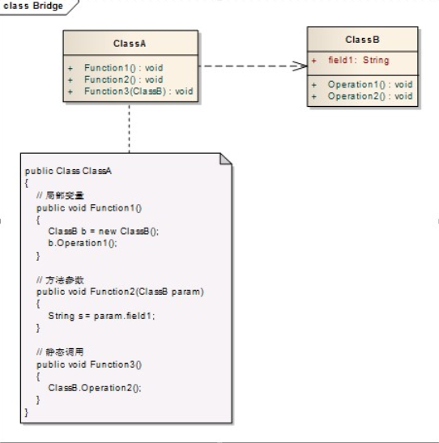
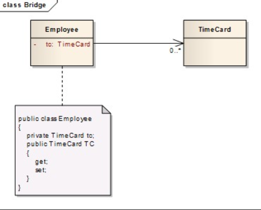
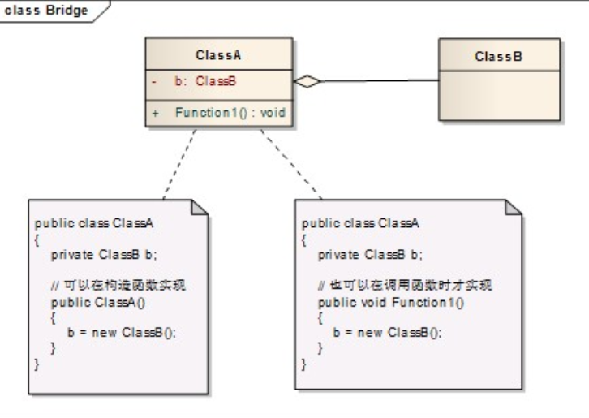
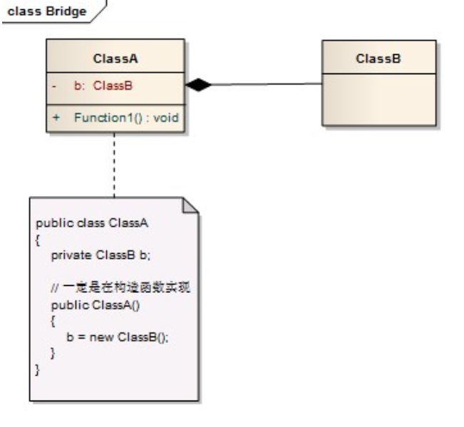
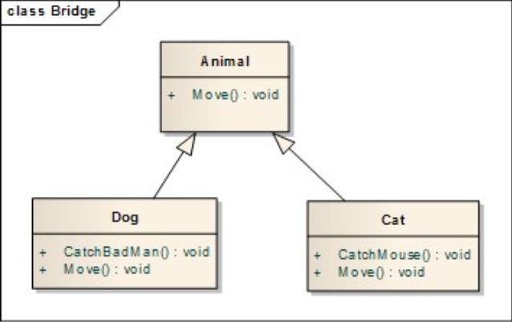
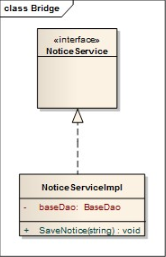

设计模式
java base
类与类关系
泛化（ Generalization ）：类与类/接口与接口之间的继承
实现（ Realization ）：类对接口的实现
依赖（ Dependency ）：类与类之间有使用关系 非“拥有”
关联（ Association ）：类与接口的依赖关系 “拥有”
聚合（ Aggregation ）：特殊关联 部分-整体 不具有相同的生命周期 弱关联
联合（ Composition ）：特许关联 部分-整体 有相同生命周期 强关联
类图
依赖
关联
聚合
组合
泛化
实现
设计原则
单一职责原则
（Single Responsibility Principle，SRP）
定义
There should never be more than one reason for a class to change.
（应该有且仅有一个原因引起类的变更）
好处
类的复杂性降低，实现什么职责都有清晰明确的定义；
可读性提高，复杂性降低，那当然可读性提高了；
可维护性提高，可读性提高，那当然更容易维护了
变更引起的风险降低，变更是必不可少的，如果接口的单一职责做得好，一个接口修改只对相应的实现类有影响，对其他的接口无影响，这对系统的扩展性、维护性都有非常大的帮助。
接口一定要做到单一职责，类的设计尽量做到只有一个原因引起变化。
里氏替换原则
（Liskov Substitution Principle，LSP）
定义
第一种定义，也是最正宗的定义：If for each object o1 of type S there is an object o2 of
type T such that for all programs P defined in terms of T,the behavior of P is unchanged when o1 is
substituted for o2 then S is a subtype of T.（如果对每一个类型为S的对象o1，都有类型为T的对
象o2，使得以T定义的所有程序P在所有的对象o1都代换成o2时，程序P的行为没有发生变
化，那么类型S是类型T的子类型。）
第二种定义：Functions that use pointers or references to base classes must be able to use
objects of derived classes without knowing it.（所有引用基类的地方必须能透明地使用其子类的
对象。）
规则
子类必须完全实现父类的方法
子类可以有自己的个性
覆盖或实现父类的方法时输入参数可以被放大
覆写或实现父类的方法时输出结果可以被缩小
依赖倒置原则
（Dependence Inversion Principle,DIP）
定义
High level modules should not depend upon low level modules.Both should depend upon abstractions.Abstractions should not depend upon details.Details should depend upon abstractions.
高层模块不应该依赖低层模块，两者都应该依赖其抽象；
抽象不应该依赖细节；
细节应该依赖抽象。
最佳实践
每个类尽量都有接口或抽象类，或者抽象类和接口两者都具备
变量的表面类型尽量是接口或者是抽象类
任何类都不应该从具体类派生
尽量不要覆写基类的方法
结合里氏替换原则使用
接口隔离原则
（Interface Segregation Principle）
接口分类：
实例接口、类接口
定义
Clients should not be forced to depend upon interfaces that they don’t use.（客户端不应该依
赖它不需要的接口。）
The dependency of one class to another one should depend on the smallest possible interface.
（类间的依赖关系应该建立在最小的接口上。）
迪米特法则
（Law of Demeter，LoD）也称为最少知识原则（Least Knowledge Principle，LKP）
1.只和朋友交流
迪米特法则还有一个英文解释是：Only talk to your immediate friends（只与直接的朋友通信。）
2.朋友间也是有距离的
3.是自己的就是自己的
如果一个方法放在本类中，既不增加类间关系，也对本类不产生负面影响，那就放置在本类中。
4.谨慎使用Serializable
开闭原则
(Open Closed Principle)
Software entities like classes,modules and functions should be open for extension but closed for modifications.（一个软件实体如类、模块和函数应该对扩展开放，对修改关闭）
做一件事情，或者选择一个方向，一般需要经历三个步骤：What——是什么，Why——为什么，How——怎么做（简称3W原则，How取最后一个w）。对于开闭原则，我们也采用这三步来分析，即什么是开闭原则，为什么要使用开闭原则，怎么使用开闭原则
SOLID：稳定
设计模式
单例模式
（Singleton Pattern）
Ensure a class has only one instance, and provide a global point of access to it.（确保某一个类只有一个实例，而且自行实例化并向整个系统提供这个实例。
工厂方法模式
- 简单工厂模式（Simple Factory Pattern、静态工厂模式）
- 多工厂模式（）
Define an interface for creating an object,but let subclasses decide which class to instantiate.Factory Method lets a class defer instantiation to subclasses.（定义一个用于创建对象的
接口，让子类决定实例化哪一个类。工厂方法使一个类的实例化延迟到其子类。
抽象工厂模式
模板方法模式
建造者模式
代理模式
原型模式
中介者模式
命令模式
责任链模式
装饰模式
策略模式
适配器模式
迭代器模式
组合模式
观察者模式
门面模式
备忘录模式
访问者模式
状态模式
解释器模式
享元模式
桥梁模式
程序命名
来源：程序命名
一. 常见函数命名风格
目前来说，最常见的函数命名主要有两种风格：驼峰命名和帕斯卡命名。
- 驼峰命名：多个单词组成一个名称时，第一个单词全部小写，后面单词首字母大写；如：
public void setUserName(String userName);
- 帕斯卡命名：多个单词组成一个名称时，每个单词的首字母大写；
public void SetUserName(String userName);
两种命名风格都是ok的，但要保证一点，对于一个团队或者一个项目，需要根据语言本身的推荐命名方式做好约定。比如java一般都采取驼峰命名，C#采取帕斯卡命名。
二. 函数命名最高境界
我们通常说：天下武功，唯快不破。那么对于函数命名来说最高境界是什么呢？我认为是：见字如面，顾名思义，就是看到函数的名字就知道这个函数具体做了哪些事情。
比如上面的函数：
public void setUserName(String userName);
但是下面这个函数命名就不是一个好的命名：
public String addCharacter(String originString, char ch);
这个函数，一咋看，还不错，从函数字面意思看是给某个字符串添加一个字符。但是到底是在原有字符串首部添加，还是在原有字符串末尾追加呢？亦或是在某个固定位置插入呢？从函数名字完全看不出来这个函数的真正意图，只能继续往下读这个函数的具体实现才知道。
而下面这几个名字就比上面要好得多：
public String appendCharacter(String originString, char ch); // 追加到末尾 public String insertCharacter(String originString, char ch, int insertPosition); // 插入指定位置
三. 函数命名最佳实践
1）要领1：动词选取要精准
通常来说，动词决定了一个函数要采取什么”动作”。动词取的好，一个函数名字已经成功了80%。
常用动词表：
| 类别 | 单词 |
|---|---|
| 添加/插入/创建/初始化/加载 | add、append、insert、create、initialize、load |
| 删除/销毁 | delete、remove、destroy、drop |
| 打开/开始/启动 | open、start |
| 关闭/停止 | close、stop |
| 获取/读取/查找/查询 | get、fetch、acquire、read、search、find、query |
| 设置/重置/放入/写入/释放/刷新 | set、reset、put、write、release、refresh |
| 发送/推送 | send、push |
| 接收/拉取 | receive、pull |
| 提交/撤销/取消 | submit、cancel |
| 收集/采集/选取/选择 | collect、pick、select |
| 提取/解析 | sub、extract、parse |
| 编码/解码 | encode、decode |
| 填充/打包/压缩 | fill、pack、compress |
| 清空/拆包/解压 | flush、clear、unpack、decompress |
| 增加/减少 | increase、decrease、reduce |
| 分隔/拼接 | split、join、concat |
| 过滤/校验/检测 | filter、valid、check |
2）要领2：名词使用领域词汇
动词决定了函数的具体动作，而名词决定了函数具体的操作对象，对于名词，尽量使用领域词汇，不要使用生僻或者大家很少使用的词语。
举个例子：集合的容量通常用capacity、集合实际元素个数用size、字符串长度用length，这种就遵循大家的使用习惯，不要用size去形如字符串的长度。
再比如，假如使用到建造者模式，那么通常会用build作为函数名字，这个时候就不要另辟蹊径，用create来作为函数名字，使用大家约定俗成的命名习惯更容易让你的代码被别人读懂。
常用名词表：
| 类别 | 单词 |
|---|---|
| 容量/大小/长度 | capacity、size、length |
| 实例/上下文 | instance、context |
| 配置 | config、settings |
| 头部/前面/前一个/第一个 | header、front、previous、first |
| 尾部/后面/后一个/最后一个 | tail、back、next、last |
| 区间/区域/某一部分/范围/规模 | range、interval、region、area、section、scope、scale |
| 缓存/缓冲/会话 | cache、buffer、session |
| 本地/局部/全局 | local、global |
| 成员/元素 | member、element |
| 菜单/列表 | menu、list |
| 源/目标 | source、destination、target |
3）要领3：函数取名最忌讳”名不副实”
函数取名最忌讳的是”名不副实”，举个例子，假如有个Cache类，里面有个函数判断key是否过期：
public boolean isExpired(String key) { // 当前时间戳 long curTimestamp = DateUtils.nowUnixTime(); // 获取key的存入时间戳 long storeTimestamp = getStoreTimestamp(key); if (curTimestamp - storeTimestamp > MAX_EXPIRE_SECONDS) { // 注意这个地方的delete是个隐藏逻辑 delete(key); return true; } return false; }
上面这个函数从函数字面意思看是判断key是否过期，但是！！它居然在函数里面隐藏了一段特殊逻辑：如果过期则删除掉key。这个就是典型的”名不副实”，这个是最忌讳的，会给后续的开发人员留下”巨坑”。
有两种方式去优化这段代码：
- 方式一：将隐藏逻辑去掉
public boolean isExpired(String key) { // 当前时间戳 long curTimestamp = DateUtils.nowUnixTime(); // 获取key的存入时间戳 long storeTimestamp = getStoreTimestamp(key); if (curTimestamp - storeTimestamp > MAX_EXPIRE_SECONDS) { return true; } return false; }
- 方式二：改变函数名字
public int deleteIfExpired(String key) { // 当前时间戳 long curTimestamp = DateUtils.nowUnixTime(); // 获取key的存入时间戳 long storeTimestamp = getStoreTimestamp(key); if (curTimestamp - storeTimestamp > MAX_EXPIRE_SECONDS) { return delete(key); } return 0; }
4）要领4：多查询条件的函数名字谨慎使用介词by
我们平时在写查询接口时，假如有多个查询参数怎么办？每个通过by一起连接依赖？No！这绝对不是明智的方式。假如一开始产品的需求是通过学生姓名查询学生信息，写出来的可能是这样的函数：
public List
然后突然又有一天产品提出了新的需求，希望同时可以通过姓名和电话号码来查询学生信息，那么函数可能变成这样了：
public List
接着，没过多久，产品又希望根据学生年龄来查询学生信息，那么函数可能变成这样了：
public List
如果这样来给函数命名，那么你的噩梦大门即将打开。
通常比较好的做法是：
- 如果是通过主键id来查询，那么可以通过by来连接查询信息，比如：
public Student getByStudentId(long studentId);
- 如果是通过其他属性来查询，并且未来会存在多个组合查询的可能性，建议进行封装，比如：
public List
建议平时在写代码过程中，不要怕在函数命名上耗费时间，一个好的函数命名在后期会大大减少你代码重构的成本，争取对函数命名做到”见字如面”。
 陕公安备案61092402000103号
陕公安备案61092402000103号